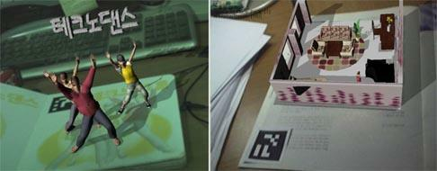
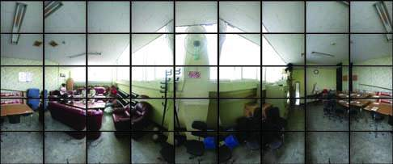
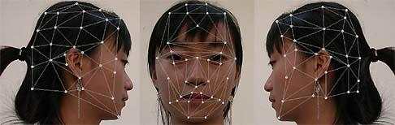
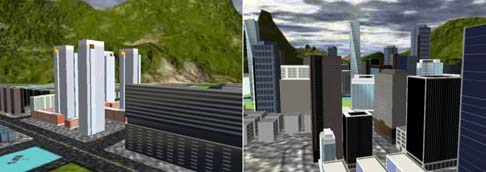

research topics
Content Authoring Tools for Augmented Reality Environment
We developed several authoring tools for fast creation of various application-dependent dynamic contents aimed to augmented reality environments. The scenario authoring tool helps developers to create complex time-varying dynamic scenes. A wide range of AR simulation contents can be easily implemented using the tools. Using the tools we implemented several useful AR contents such as an AR book contents for dance lessons and another AR book for interior design and simulation.

Creating and Rendering Virtual Space Environments
A panoramic image is useful for representing background environment of a virtual space. We developed a panorama authoring tool which creates a full spherical panoramic image from an array of photos. The panoramic image provides a full 360¡Æ horizontal view and 180¡Æ vertical view. It is allowed to capture photos using any one of general purpose cameras, such as a camera with a standard normal 35mm lens whose horizontal field of view is about 40 degrees. Typically, we capture 9x5 images in a fixed position and stitch all the images.

Generating Face Textures from Photos
We developed a texture generation tool for 3D avatars from three or more human face photos. First, we manually mark image positions corresponding to vertices of a given UVW map. Then, a face texture is automatically generated from the photo images. The proposed texture generation scheme extremely reduces the amount of manual work and generated textures are photorealistic since the textures fully reflect the naturalness of the original photos. The texture creation scheme can be applied to any kind of mesh structures of 3D models and mesh structures need not be changed to accommodate the given textures.

Real-time rendering of complex urban environments
An intelligent culling technique is necessary in rendering 3D scenes to allow the real-time navigation in complex virtual environments. When rendering a large scene, a huge number of objects can reside in a viewing frustum. Virtual urban environments present challenges to interactive visualization systems, because of the huge complexity. We have developed a contribution culling method for the view-dependent real-time rendering of complex huge urban scenes.

Entertainment Computing Laboratory